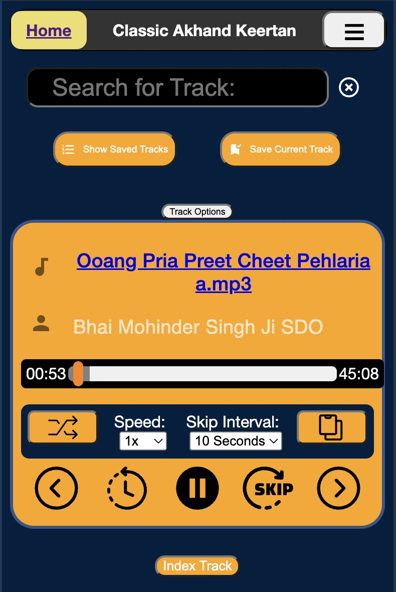
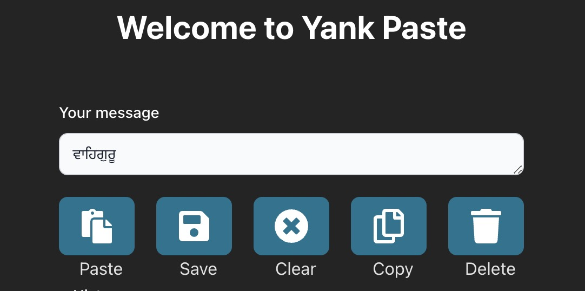
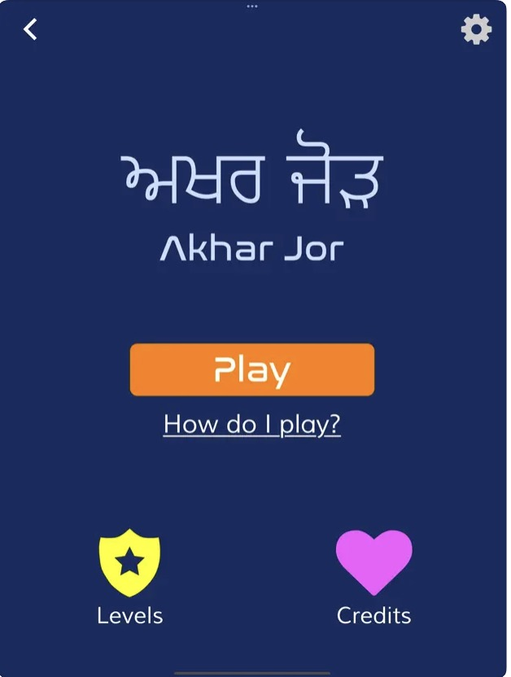
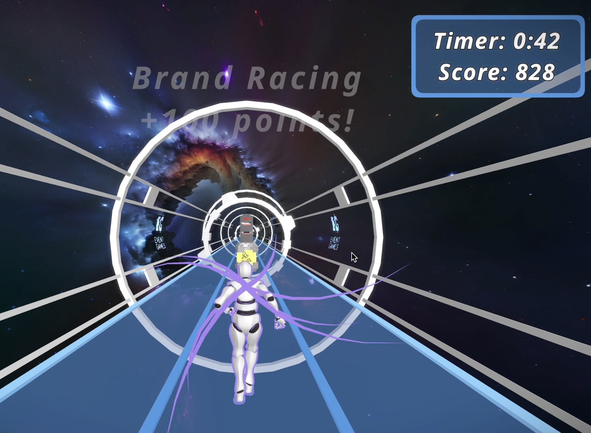
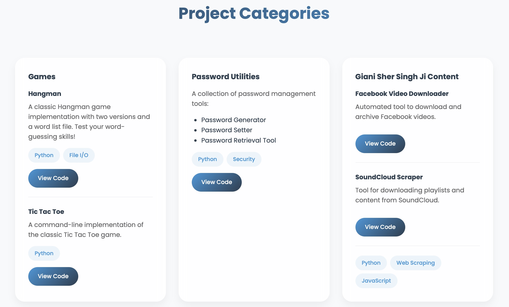
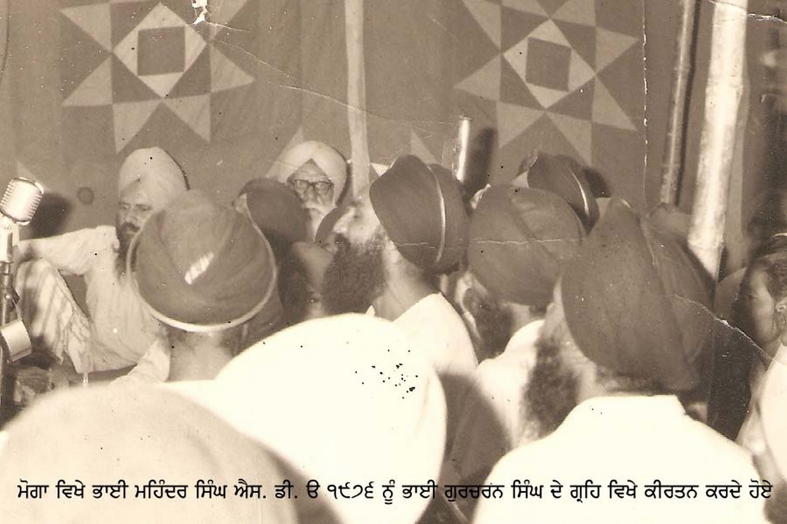
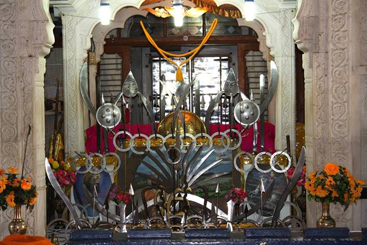

ChetHari
Keep Gurbani close. Read, search, and reflect with multiple translations, home screen widgets, and iCloud sync in a native iOS app.
- Swift
- SwiftUI
- Firebase
- Python
- SQLite
GIAN SINGH · SOFTWARE DEVELOPER
I build apps, websites, and tools that make everyday life a little easier - and bring my community a little closer.
ਵਾਹਿਗੁਰੂ ਜੀ ਕਾ ਖ਼ਾਲਸਾ ਵਾਹਿਗੁਰੂ ਜੀ ਕੀ ਫ਼ਤਹਿ
With the support of the Almighty, through the Guru and the Shaheeds.
01 / SELECTED WORK
From everyday utilities
to tools rooted in faith.
Keep Gurbani close. Read, search, and reflect with multiple translations, home screen widgets, and iCloud sync in a native iOS app.
Make room for more memories. Compress photos and videos on your iPhone or iPad, with quality controls, previews, and batch processing. All on-device.

Web · Sikh audioA place to listen and explore. Bringing keertan, katha, and scripture readings from Sikh audio collections together on the web.
02 / MORE TO EXPLORE
Apps, collaborations,
and experiments.
Tools for learning to read Gurbani, with a focus on Santhiya. Available on iOS, Android, and the web.

A shared clipboard across your devices. Copy on one device and access recent items through a shared URL.

Punjabi alphabet learning through play. I built the React Native foundation during my internship at Khalis Foundation.

A 3D endless runner built with React and Three.js. A collaborative capstone with obstacles, power-ups, and a race for a higher score.
A simple interval timer for workouts and meditation. My first Swift app, with customizable work and rest periods and sound alerts.
An interactive way to practice Gurmukhi letters and sounds, built to make learning more approachable.
A welcoming home on the web for a Sikh youth day camp, its workshops, outdoor activities, and seva.

The experiments that started it all: games, scripts, and tools that helped me find the joy in programming.

A companion site for Keertan101, connecting listeners to the recordings shared on Instagram.

An earlier landing page for Camp Panth, a Sikh youth camp. A piece of the journey before its current website.
03 / A LITTLE ABOUT ME
I’m Gian, a developer who enjoys turning practical ideas into things people can use. My work spans native iOS apps, web experiences, and the occasional game.
Many of my projects grow out of the Sikh community — making Gurbani easier to explore, helping people learn Gurmukhi, and connecting listeners with keertan. Others start with a simple everyday problem I want to solve.
See what I’m building on GitHubLET’S CONNECT
A project, a question, or just a hello — I’d love to hear from you.
Get in touch